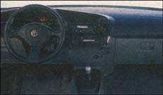

Four Wheels No Emissions
By Sam Martin
December/January 1999
These days there seems to be a surfeit amount of talk on saving the ozone layer with alternative fuels and hybrid engines. So much, in fact, that I keep asking myself if this is just another industry pep rally akin to the hoopla made over electric cars during the OPEC oil crisis in the '70s. Back in 1976, while waiting in gas station lines 20 cars my family would have gladly swapped our Ford Capri for a Sebring-Vanguard electric Citicar, even if its top speed was a sad 32 miles an hour. But we didn't. The technology, the convenience and the price just weren't right.
So why are today's clean air cars any different? It's not as if the price of gasoline is expensive enough to pry consumers out of their SUVs, even if carbon emissions are at an all-time high. But the fact is the United States uses 17 million barrels of oil per day, nearly half of which is imported. And if you consider that one Boeing 747 burns 6.7 gallons of fuel per mile, it's easy to see why fossil fuel-burning engines are a major health concern not just for the nation, but for the planet.
Which is why the car industry, having been urged on by state and federal legislation, has finally put its money where its mouth used to be. Leading the cheers for cleaner air is, of course, California. The state's Zero Emission Standard of 1993 calls for 10% of California's vehicles to have zero emissions by 2003-that means electric cars only. Arizona, New York and Massachusetts have since signed on and in 1998 the federally sponsored Transportation Efficiency Act for the 21st Century became the biggest public works bill in U.S. history, setting aside $9.1 billion for environmental programs, including those that encourage the use of alternative-fuel vehicles. As we enter the next century, every major auto company has increased the time and money spent on alternative car research.
The HONDA HYBRID, first offered for sale at the end of 1999, features both an electric motor and a one-liter, three-cylinder engine and averages 70 miles to the gallon.
So far, not only are Toyota, Honda, Fiat, BMW and Audi marketing fuel-saving and hybrid-engine cars, but Chrysler, Ford and General Motors have added clean air cars to their salesrooms in the U.S. What distinguishes this burst of activity from the last go-round is that people are actually buying the cars. And no wonder, given the strides in the technology surrounding hybrid and alternative-fuel engines. These cars are as fast, as cheap and as attractive as piston-engine-only models. Plus, they have near zero emissions and can get up to 70 miles to the gallon.
But what exactly does hybrid mean? A hybrid car uses two engines, combining the power and longevity of a piston engine with the zero emission efficiency of an electric motor. Toyota's Prius, like General Motor's EV1 Parallel Hybrid and Honda's Insight, stores the battery pack under the passenger seats; an electric drive unit powers the front wheels, while the piston engine drives the rear wheels from the back of the car. Onboard computers determine when one or both engines should power the car, usually switching to the gas engine at higher speeds and the electric one at idling or slower speeds. These hybrid cars also use the piston engine and rear brakes in what the industry is calling "regenerative braking" to recharge the vehicles' battery packs. That means none of the time-consuming or expensive plug-ins that you might have on an all-electric car. It also means ultra-low emissions.
Take the Toyota Prius. After having sold 18,000 models in Japan, Toyota is now ready to launch sales in the U.S. That makes the Prius the first gasoline/electric hybrid car ready for mass distribution in this country. Among its major selling points? It's nude of 90% recyclable materials, including ultra-lightweight steel in the body frame and lead-free rust-proofing agents and window paints Also, the practical-looking car gets 66 miles to the gallon, can travel at speeds up - to 100 miles an hour and can go from 0 to 60 in 14 seconds. The Prius is not retailing at market-reasonable $16, 500.
But while hybrid cars may be in pole position, there are a slew of other experimental or prototype cars racing to the front of the pack. Hydrogen fuel cells are already powering city buses in Houston, Chicago and Vancouver, while Ford, GM and Daimler Chrysler have fuel cell cars in their immediate plans. In fact, many people in the industry consider the hybrid engine merely a stepping-stone on the way to fuel cell systems, which chemically break down hydrogen to produce an electric charge. Initially, fuel-cell powered cars are expected to run on hydrogen extracted from a fossil fuel. But because no actual combustion takes place in a fuel cell system, no matter the fuel used - be it methanol, gasoline or diesel - there will be no harmful emissions other than water, heat and small amounts of C02.
Still , if you're determined to settle for nothing short of zero emissions, check out the latest electric autos. Zero emission overhauls include the GM-made, Saturn-distributed EVl, which has been redesigned and improved upon for nearly ten years.
The sleek two- seater features enclosed rear wheel wells and a pointed back end, giving it the look of an early 1960s sedan. Under the hood are 26 valve-regulated lead acid batteries and an electric motor capable of churning out 137 horsepower. It can travel up to 80 miles per hour, go from 0 to 60 in nine seconds and travel 79 miles before needing to recharge, which, with a 220-volt/6.6 kilowatt charger, takes only three hours. Currently, most of these cars are sold only in California and Arizona, at a price of around $20,000.
With the growing popularity of alternative-fuel cars, one can't help but wonder if these new technologies are making the large oil corporations nervous. After all, they stand to lose customers not only in the U.S. but in Europe and Asia, where every major car company is working toward adding at least one hybrid, electric or fuel cell car to their showrooms. But the fact is that the oil companies are getting on board as well. Shell is actually lending money and resources to help Iceland convert to an all-hydrogen based industry and Texaco is sponsoring multicity alternative public transportation programs.
As we begin a new century, the institutional ization of the air-friendly auto may finally have graduated from environmental fantasy to the assembly line.
 The TOYOTA PRIUS, already in showroms around the country, constantly regulates the power between its 1.5-liter conventional gasoline engine and its electric motor in order to maximize drivability and eficiency. It gets 80 miles to the gallon, 680 miles pertank, and, at$16,500, the Prius is priced to compete. |
The FORD TURING is yet another entry into the e-car race. |
 TOYOTA E-COM Making a Volkswagen Bug look like a behemoth, Toyota's experimental E-Com is a two-seat electric vehicle designed for use on college campuses and in planned residential developments. Though perfectly street legal, its 60 mile range (short even by liberal industry standards) relegates the E-Com to jaunts to the store and back. |
|
Though innovative in its body design and computerized/ GPS dash, this nickel-metal battery-run car typifies that breed of electric auto the public may not have the patience for. Inevitably, it seems, those accustomed to a once weekly fill-up and the high-gear acceleration of a combustion engine will be frustrated |
GM's venerable EV-1,nearly ten years after its initial development, continues to innovate. |
|
|
|
|
|